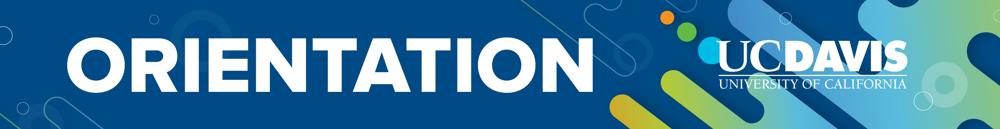
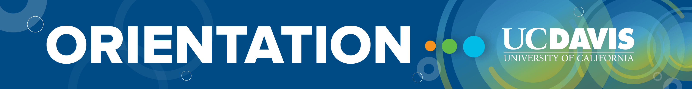
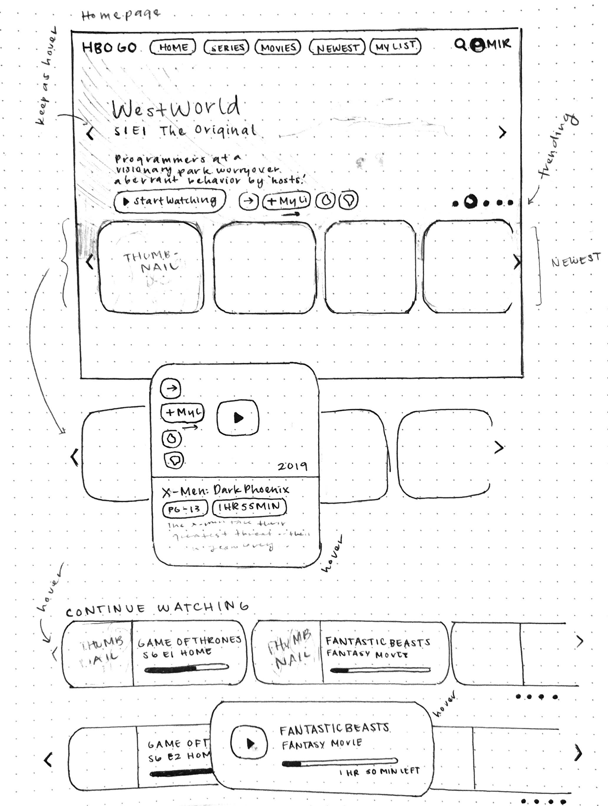
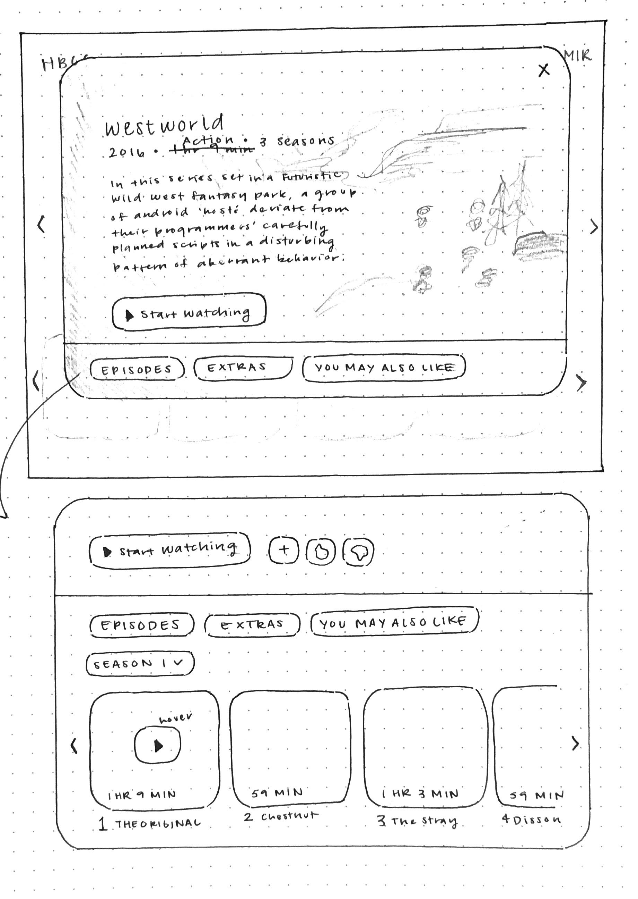
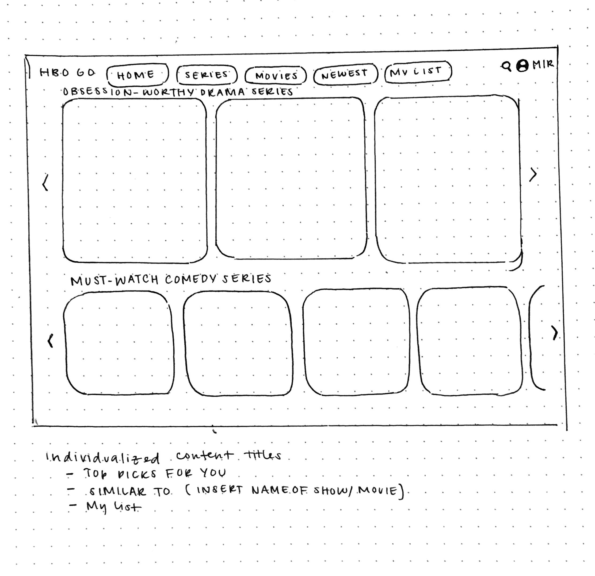
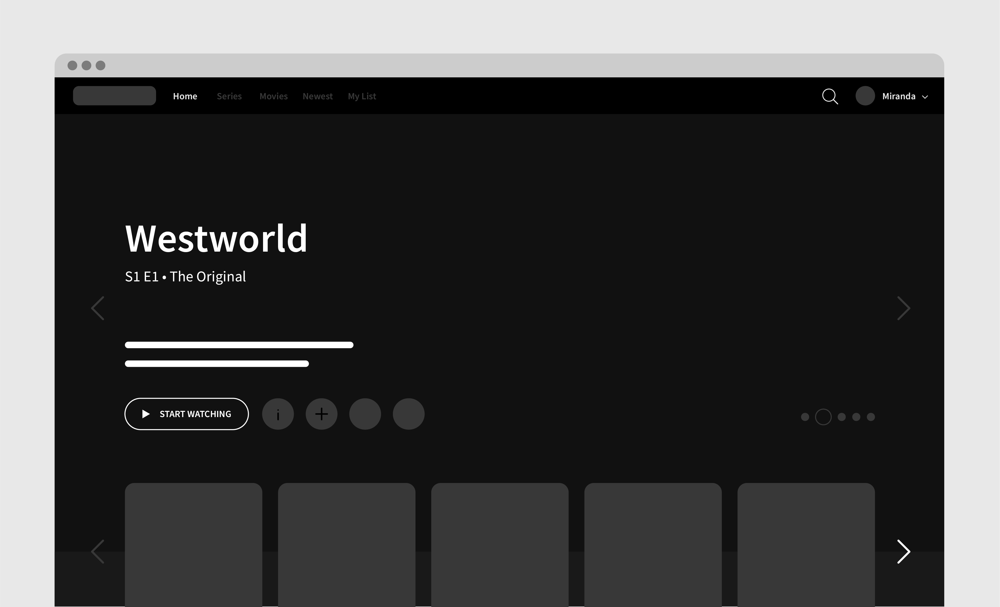
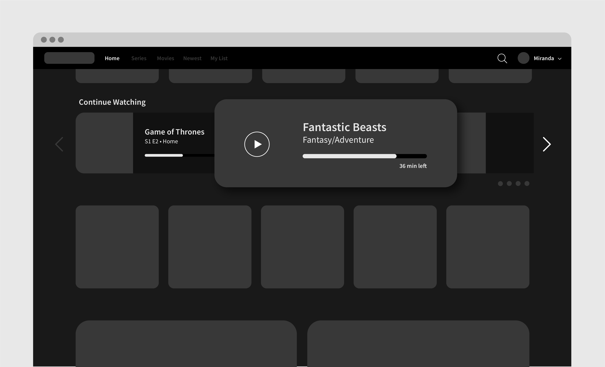
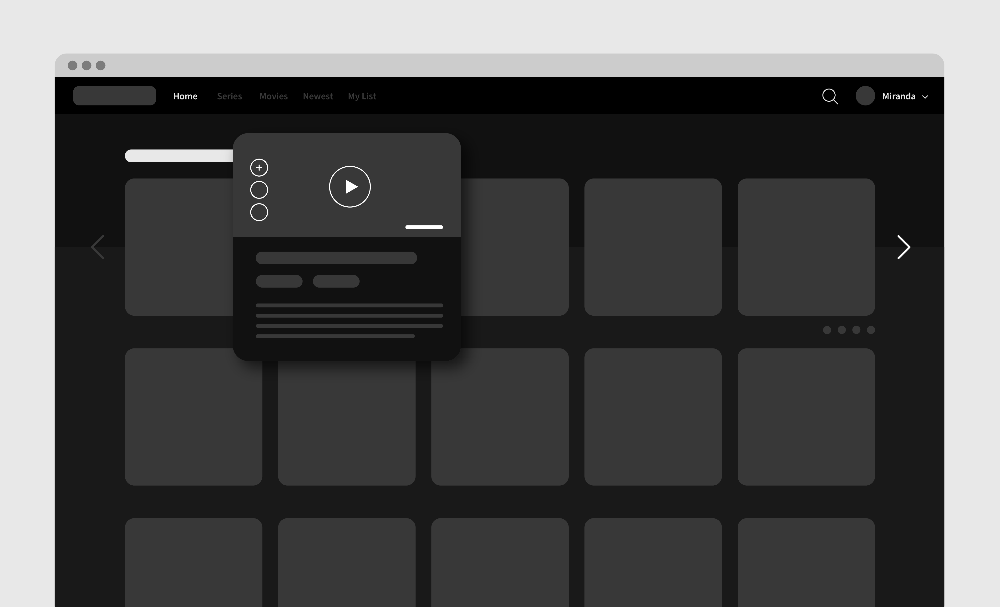
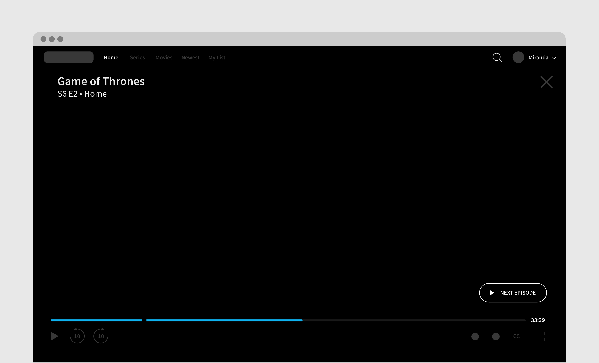

Project Elements
Duration 🕐
October 2019 – November 2019 (3 weeks)
Tools ✒️
Adobe Illustrator, Adobe Photoshop
Role 🙋
Brand Identity, Visuals
01. Project Overview
Background
UC Davis Student Housing provides a home to over 10,000 UC Davis undergraduate and graduate students. About 6,000 students reside in the
residence halls, most of them in their first year at the university. Student Housing's mission is to provide living, dining and academic support
services that facilitate a successful transition to the UC Davis community and foster ongoing learning and life-skill development.
UC Davis Orientation is held to help first-year and transfer students prepare for a great first year. The experience is split into three parts: Aggie 101, Aggie Advising, and Aggie Orientation.
UC Davis Orientation is held to help first-year and transfer students prepare for a great first year. The experience is split into three parts: Aggie 101, Aggie Advising, and Aggie Orientation.
Objective
UC Davis Orientation hires over 600 student leaders in four different positions who make Aggie Orientation possible. This year's orientation experience implemented a new three-part system
where each part had a corresponding color to differentiate itself from the others. My role was to
design the new hire marketing materials and branding for the upcoming 2020 orientation that incorporated this new standard.
Aggie 101
Learn about UC Davis resources, explore your Aggie community, and prepare to arrive on campus - all online.
Aggie Advising
Receive academic advising remotely in preparation for course schedule planning and registration.
Aggie Orientation
Get excited about being an Aggie! Build community networks of support, find resources, and begin your life on campus during our five day program.
02. Design
Email Header
Because HBO has a diverse audience, I decided to conduct interviews with people in and out of my immediate network,
but also use the HBO Go reviews customers have left to guide my redesign.


03. Ideation
Sketches



04. Prototyping
Wireframes
I took the initial sketches and translated them into simple wireframes. I was able to
explore different layouts that best displayed the information to the user and ease their
watching experience. I added many features that I deemed suitable in aiding the viewer and minimizing
the frustration that many users expressed in their interviews and reviews.




05. Reflection
Lessons & Takeaways